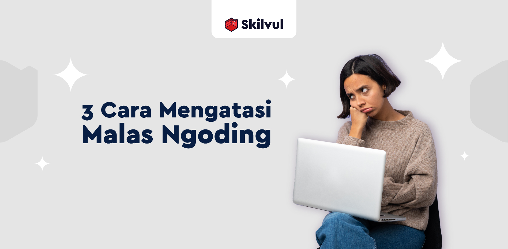

List Blogs

Setelah menulis beberapa baris kode, kemudian notifikasi error muncul, coba terapkan hal-hal berikut biar nggak panik ketemu error
Teknologi yang terus berkembang telah membuat pemrograman sebagai salah satu kemampuan yang paling diinginkan oleh saat ini.

Rasa malas adalah sesuatu yang kita semua pasti pernah rasakan. Sadar atau tidak,kemalasan bisa menjadi "pembunuh masa depan".
Sebagaimana pisau perlu diasah untuk menjadi tajam, kemampuan coding juga perlu diasah agar semakin tajam.Berikut daftar game yang bisa mengasah mengoding.